Models and animation
Shape it, paint it, make it move.
A block model editor with a live 3D preview, a pixel painter for textures, and a timeline for animations. All of it saved into the same project as the rest of the mod.
Models, textures, animations, screens, quests and the rules that tie them together, in one desktop studio. Press Play and the mod opens in the game.
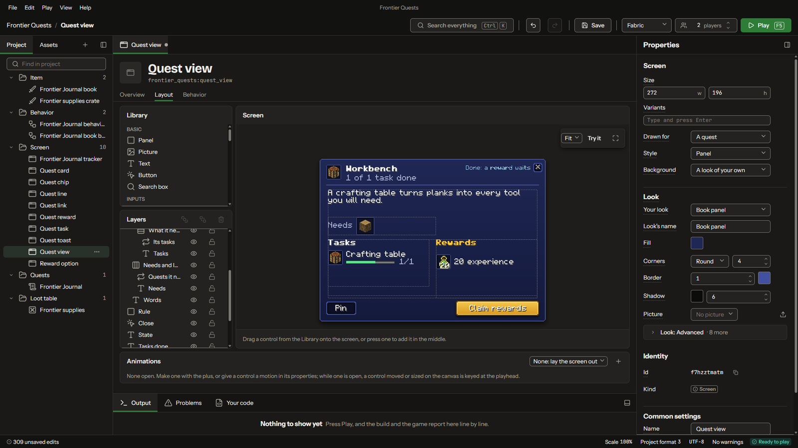
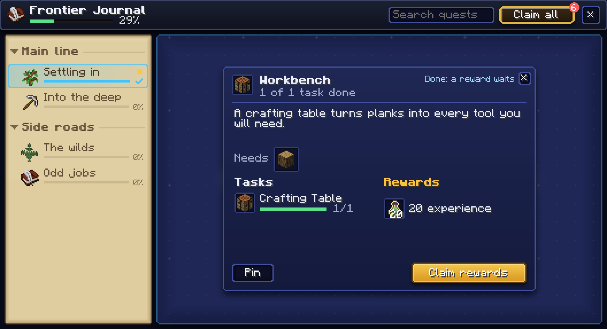
Laid out in the studio, opened in the game. Minecraft 1.21.1, NeoForge and Fabric.
A block model editor with a live 3D preview, a pixel painter for textures, and a timeline for animations. All of it saved into the same project as the rest of the mod.
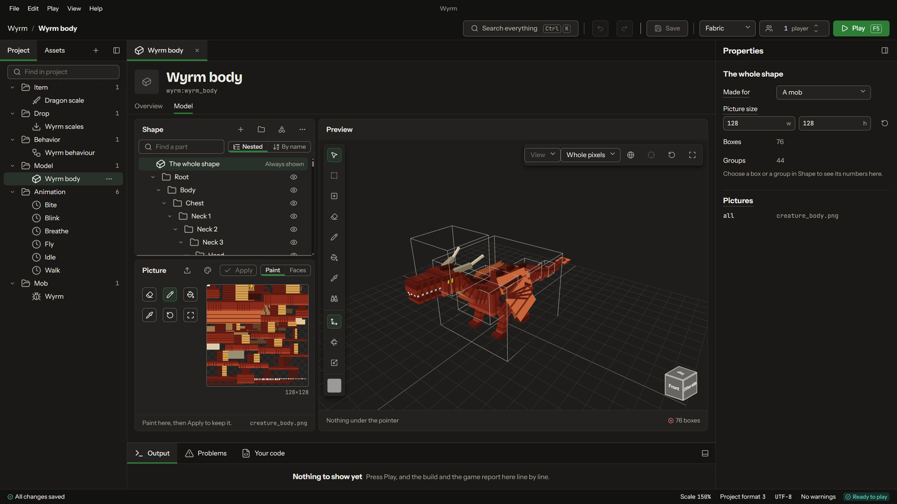
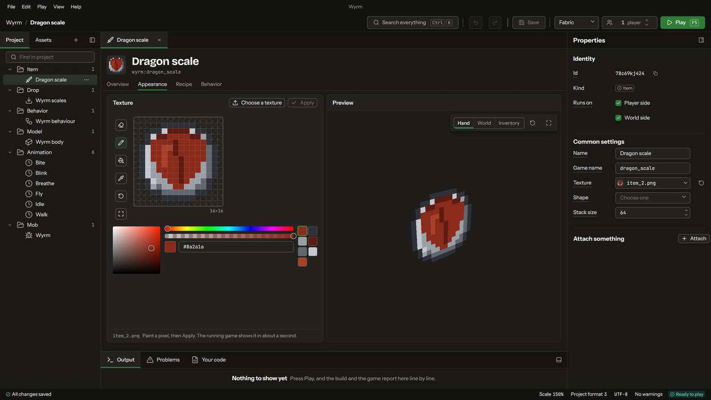
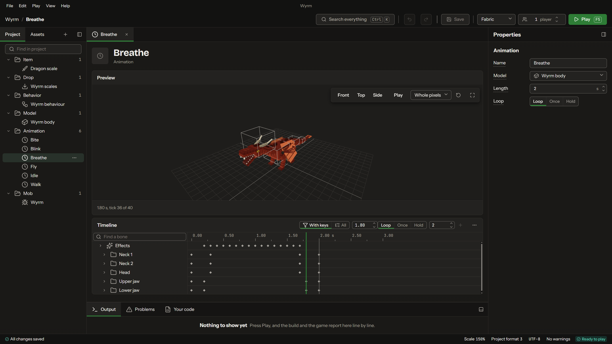
Machine screens, HUD bars, books and quest views. Drag controls onto the screen, give them a look, and tie them to what the mod knows: a tank's level, a player's mana, the foods they've tasted.
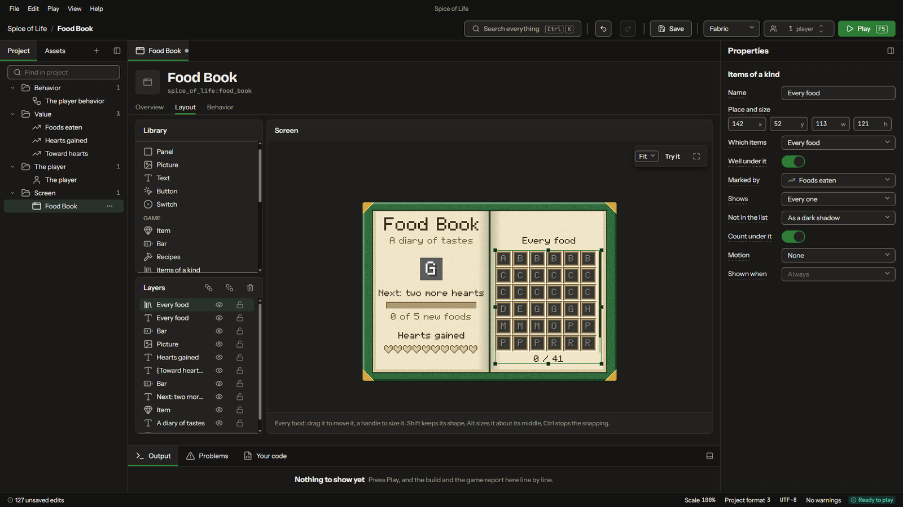
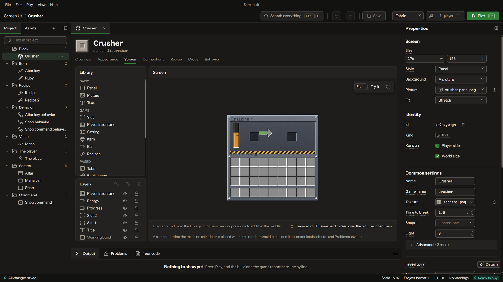
When the sword hits something, set it on fire, and if it was a player, warn whoever holds the sword. Conditions nest into groups the way a game engine's visual scripting does. Each sentence is Java underneath, and the code view is always one click away.
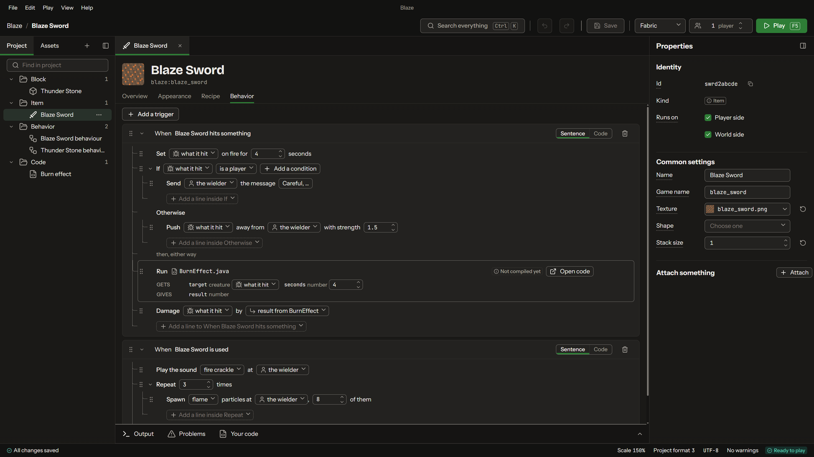
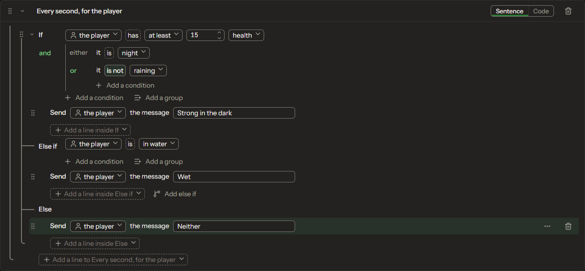
Chapters, quests and the lines between them, drawn on a map. Save a version whenever you like, compare any two, and see what changed, element by element.
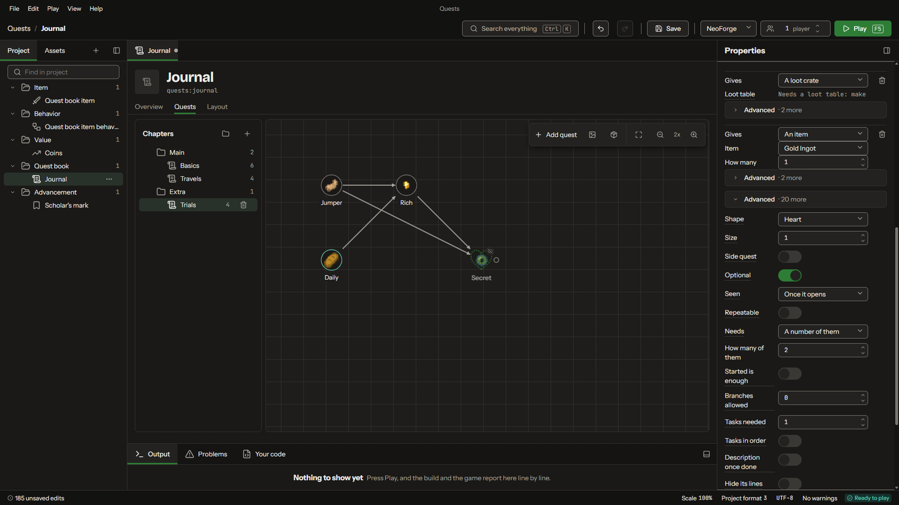
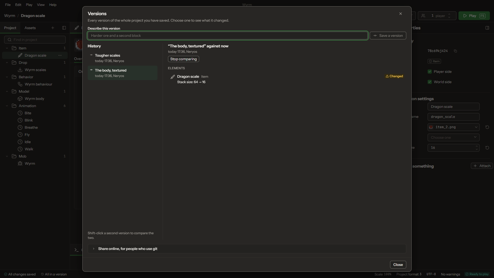
Everything below was built in the studio and photographed in a running game.
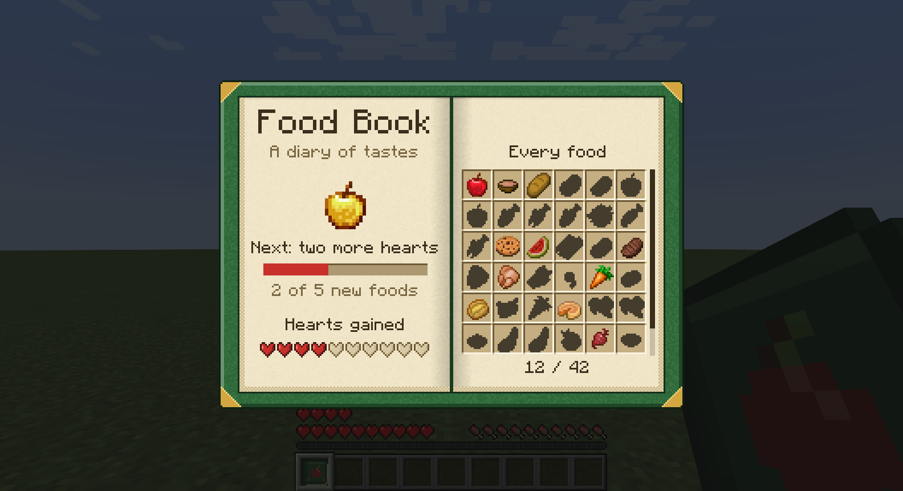
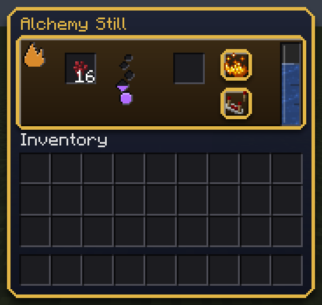
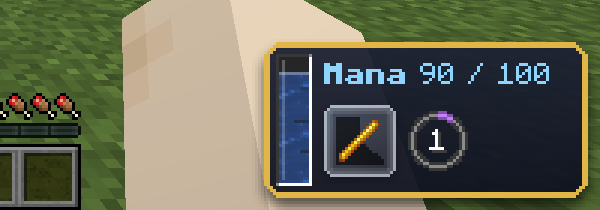
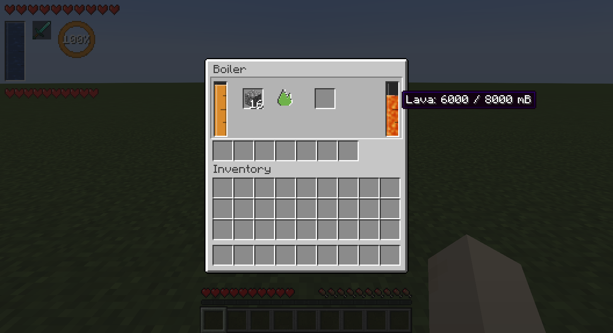
Watch the repository on GitHub to hear when it's out.